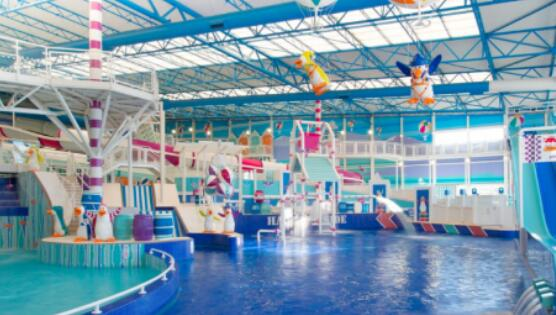

到了夏季，大部分的水上乐园都人流爆满，然而，水上乐园虽然火热，但它也有一个致命的短板，就是季节性经营特点明显，经营周期短。夏季一过，到明年的4月份，水上乐园是闭门谢客的，特别是北方室外项目，经营周期一般只有60-70天左右，这就意味着企业将面临员工流失、土地资源浪费、回收周期延长等很多问题。
但是，海南省东方市四季如夏，没有冬天！！！
海南岛属于热带季风气候，常年高温，年降水量丰富，夏季为雨季。东方市纬度低，常年如夏，四季不分，几乎没有冬季的体验。其次，东方市省的相对地理比较占优势，拥有着海南省大规模的港口，靠近我国的珠江三角洲经济发达地区，可以得到资金、技术和人才的支持。
东方市作为未来的新型旅游城市，凭借着优越的地理位置和便利的交通，蕴含着巨大的商业发展机遇。我们的游乐园可以一年四季营业，从而获得丰富利润。
现下的水上乐园在运营期基本都呈现“人山人海”的景象。水上乐园的建设周期通常只要0.5-1年。在运营正常的情况下，前一两年就可以收回成本，第3年进入盈利期。
有些经营状况非常理想的水上乐园，第1年就开始实现回本并盈利。一直处于不回本状态的水上乐园与其投资规划有着直接的关系。水上乐园作为新兴的主题公园，与其他旅游资源的相互整合，可以极大地带动一个地区旅游业的发展，因而受到政府部门的重视和支持。作为一个新兴的产业，在现下供给不足的情况下，广大的开发商在看到巨大的利益前提下愿意投资水上乐园行业。
在市场需求的推动下，水上游乐设施设备向更高速、更具刺激性的方向发展。 现下开发的很多水上乐园缺乏鲜明主题和文化创意，项目复制，设备堆砌，单一的水上乐园形式不能满足营运需求。
随着VR技术越来越普及，运用的领域越来越广泛，衍生了众多具有商业价值的跨界产品。VR在全国乃至全世界很多城市已经风靡全城，带来的商业价值超乎想象。
但在我国的水上乐园里并没有太多参与VR的元素，要么是VR单独自行开展项目，要么是水上乐园自行开展单一项目。使用VR的主题公园并不是什么新鲜事，但是VR水上乐园你又有听说过吗？游客可以带上VR头显，一边玩水，一边体验VR。
随着水乐园产品的数量不断增加，如何凸显个性，创造舒适的游玩体验一直是水乐园的设计创新的大方向，在此过程中，我们大致可以从规划设计，设备研发，运营思路创新三个大的方面去进行总结。
从规划设计的角度创新更多的是依托项目所在市场的实际需求，综合投资、客群、运营进行综合考量，例如水乐园的落地场景，其实可以更加多样化，常规的做法是在一个全新的场地上完全新建，或者在一个温泉酒店中植入水娱乐设施。
从设备研发的角度创新玩法同样如此，一直在如何将滑道多转几个弯或者将设备多抬高几米的创新方式已经无法取得突破性的效果，去水公园游玩，游客不能一直都是在排队，而应该让游客多接触水，多与水互动。所以我们不如跨跨界，看看在水乐园的空间范围内，还可以结合哪些水互动方式。